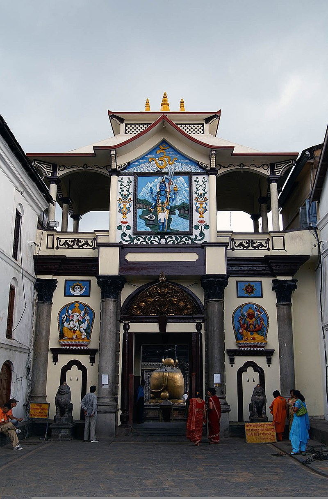
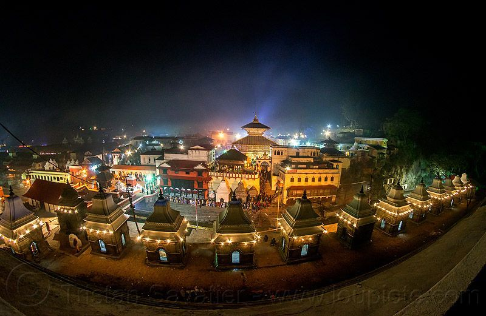
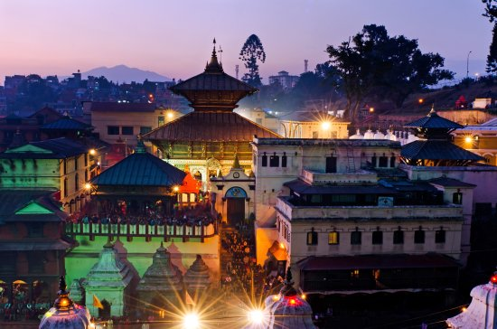
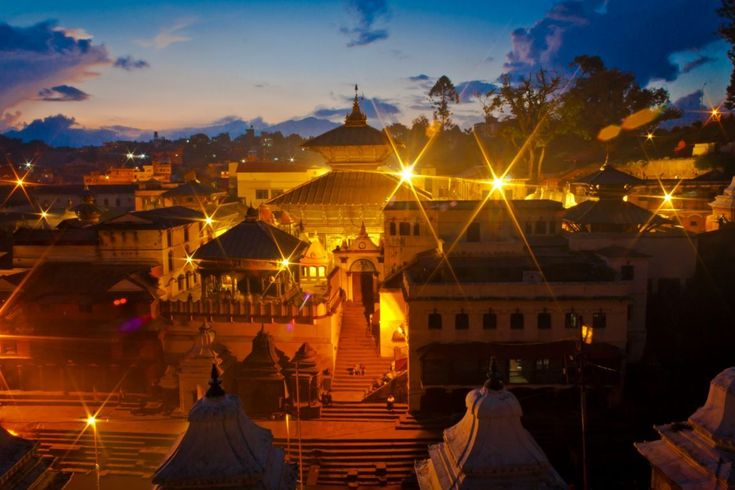
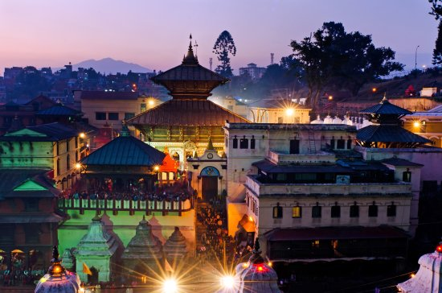
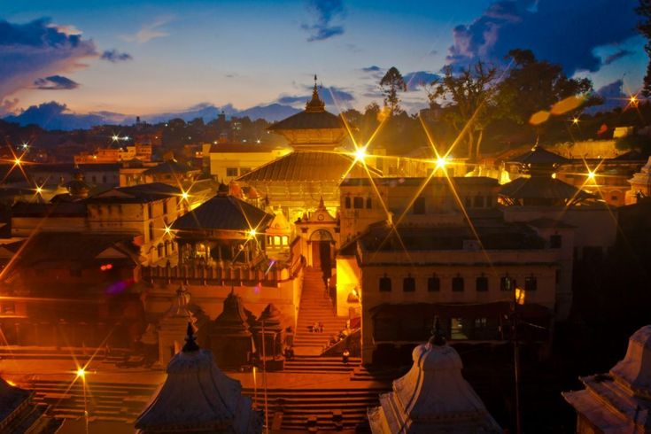

Pashupatinath Temple

Pashupatinath also known as Pasupati, is a highly revered and sacred Hindu temple located on the banks
of the Bagmati River in Kathmandu, Nepal. It holds immense significance for Hindus around the world, as
it is dedicated to Lord Shiva, the supreme deity in Hinduism. Pasupati is considered one of the most
important pilgrimage sites in Nepal and attracts millions of devotees every year.
The temple complex of Pasupati is a sprawling architectural marvel, adorned with intricate carvings and
sculptures that showcase the rich cultural heritage of Nepal. The main temple, dedicated to Lord Shiva,
stands tall with its pagoda-style structure and golden pinnacle. The sacred site is surrounded by
smaller shrines dedicated to various other deities of the Hindu pantheon.

The significance of Pasupati extends beyond its physical beauty and architectural grandeur. It is
believed to be one of the holiest places to achieve spiritual enlightenment and liberation. The temple
complex serves as a hub for religious activities and rituals, where devotees engage in prayer,
meditation, and offerings to seek the blessings of Lord Shiva. The ambiance is filled with the sound of
hymns, the aroma of incense, and the sight of devotees performing religious rites.
One of the most revered aspects of Pasupati is its role in Hindu cremation rituals. The temple is
situated near the sacred ghats of the Bagmati River, where cremations take place according to Hindu
customs. The funeral pyres burn day and night, symbolizing the cycle of life and death. It is believed
that those who are cremated here attain Moksha, liberation from the cycle of rebirth, and unite with
Lord Shiva.
Pasupati is not only a religious site but also a center for cultural celebrations and festivals. One of
the grandest festivals celebrated here is Maha Shivaratri, dedicated to Lord Shiva. On this auspicious
day, devotees from far and wide flock to Pasupati to offer prayers, engage in fasting, and participate
in vibrant processions. The festival creates an atmosphere of joy, devotion, and spiritual fervor.
 



Apart from its religious and cultural significance, Pasupati holds historical value as well. The temple
complex dates back to ancient times and has witnessed the rise and fall of various dynasties that ruled
Nepal. Its architecture reflects a blend of Nepalese pagoda-style design with influences from the Malla
and Licchavi periods. The site has undergone multiple renovations and restorations over the centuries,
preserving its magnificence and ensuring its continuous reverence.
In conclusion, Pasupati is a sacred site of immense importance in Hinduism. With its architectural
splendor, religious rituals, and historical significance, it serves as a beacon of spirituality,
attracting devotees and pilgrims from all corners of the globe. It is a place where the divine meets the
mortal, offering solace, enlightenment, and a deep connection with Lord Shiva. Pasupati stands as a
testament to the rich cultural heritage of Nepal and continues to inspire awe and reverence in all those
who visit its hallowed grounds.